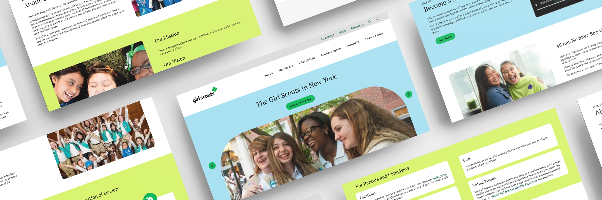
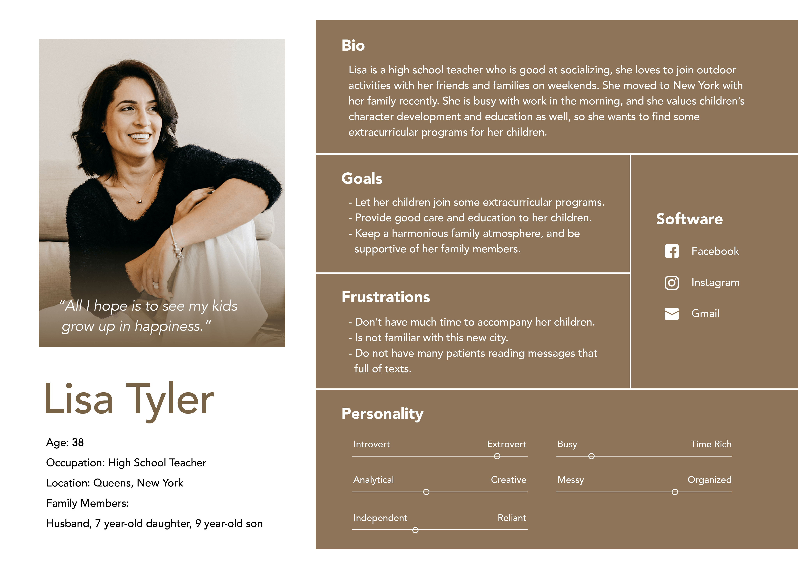
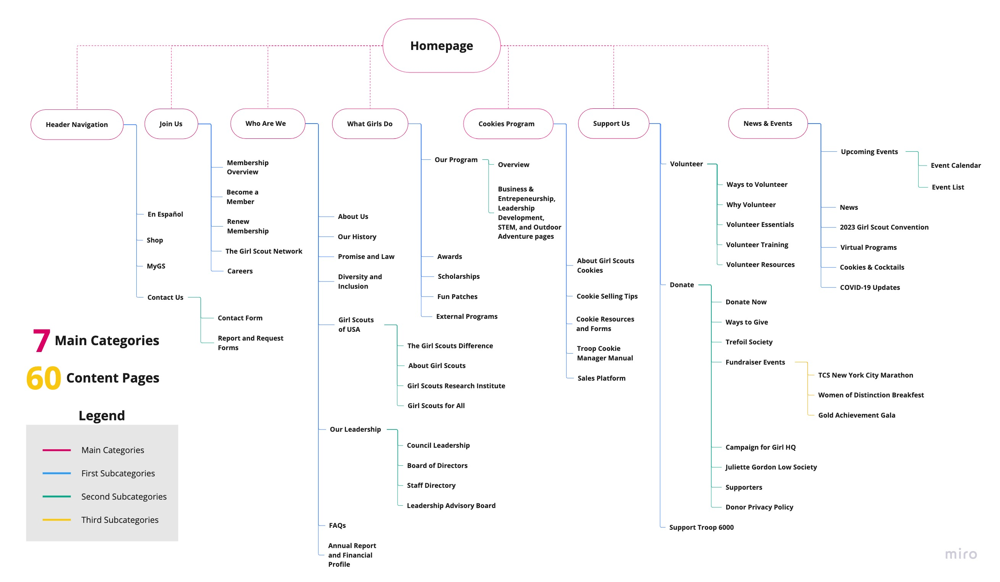
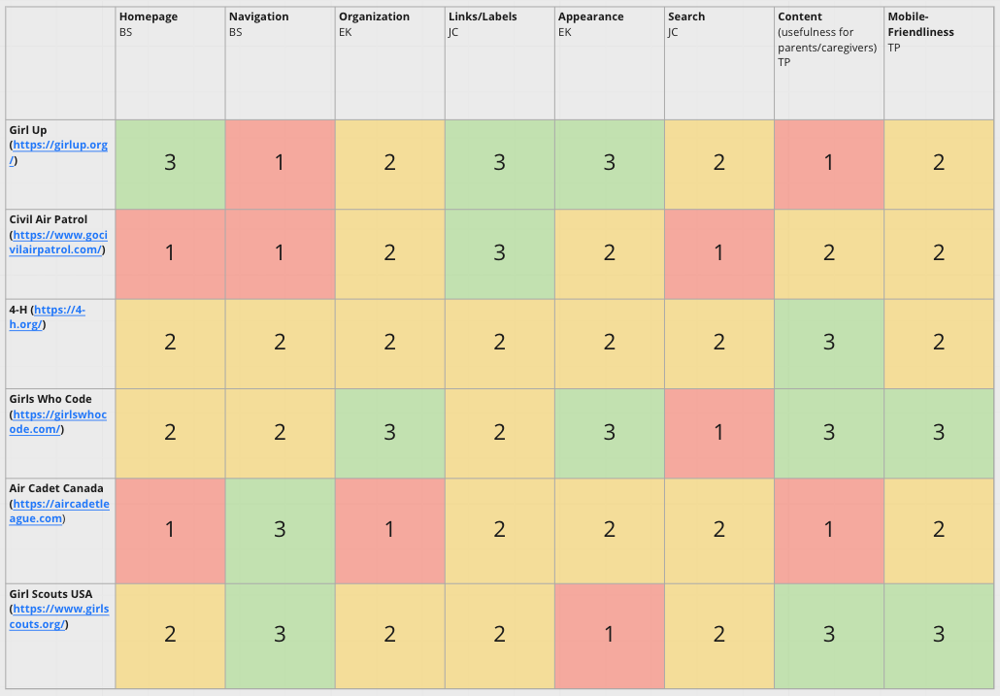
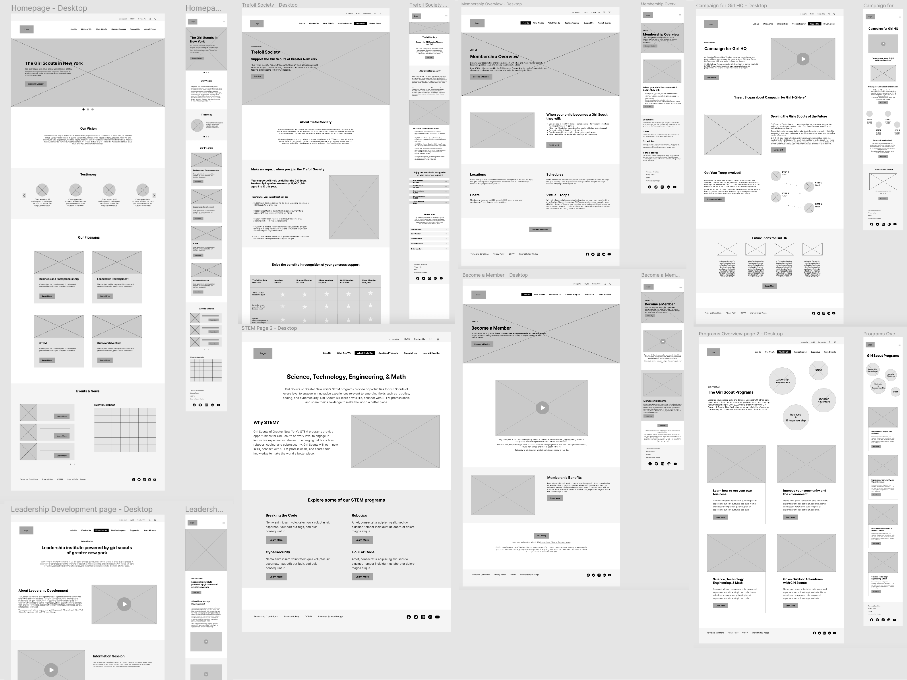
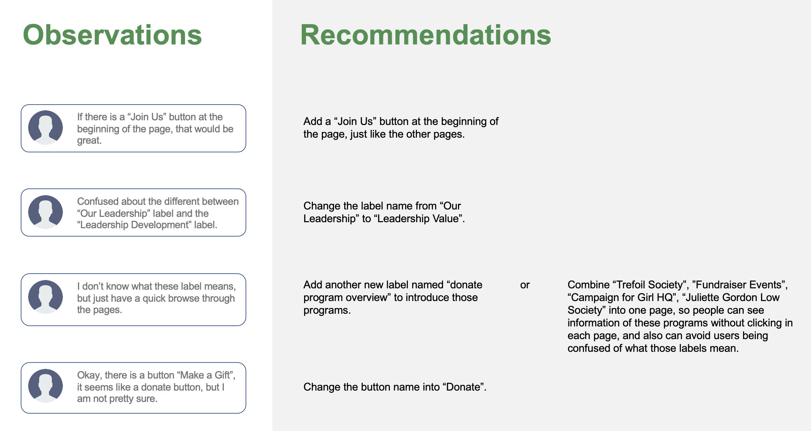
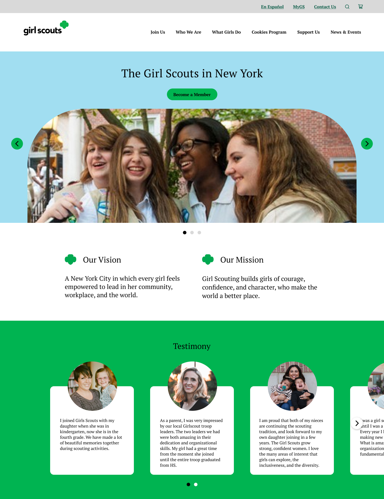
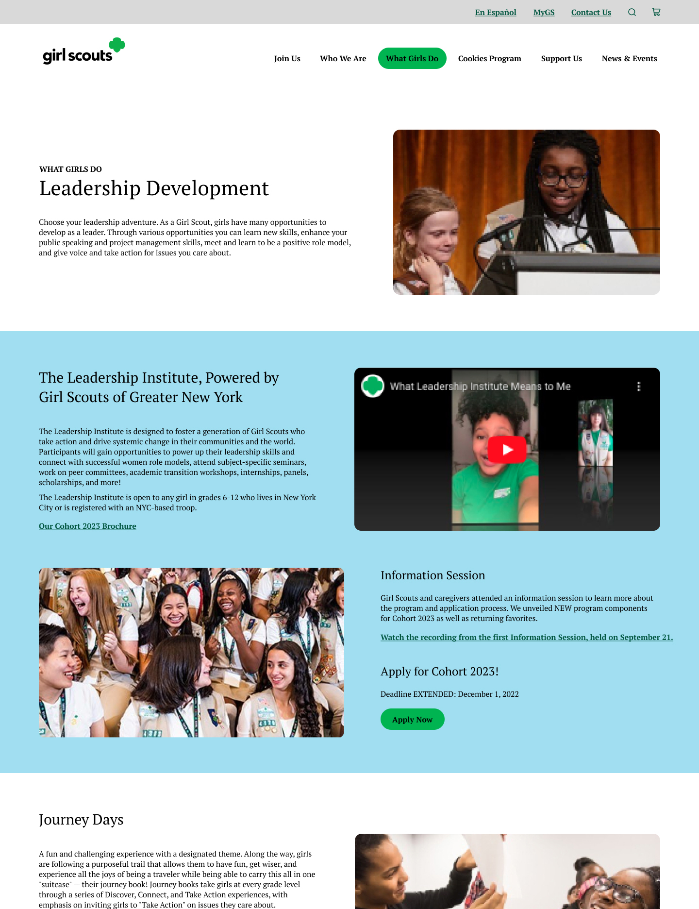
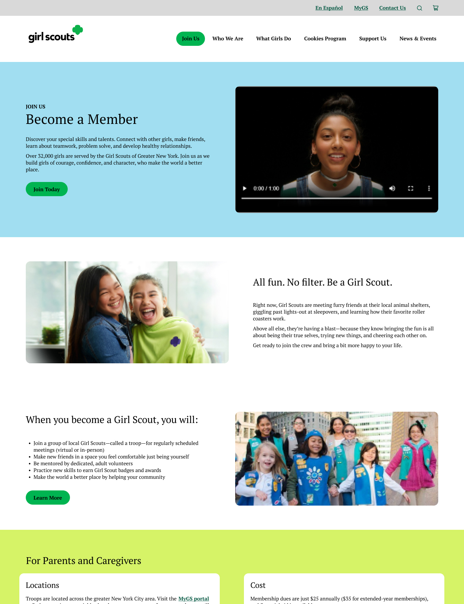

Make Caregivers become well informed after browsing through the Girl Scouts website
Website Redeign
UI/UX Design Team : LiangYu Su, Esther Kim, Tess Porter, Jiacheng Chen, Jiayi Jiang
Project Time : 2022.08 - 2022.12
Project Brief
The Girl Scouts is a place where to develop girls’ skills and positive features. We stood from caregivers’ view to rethink the whole website, used several UX research methods to find out the potential lack of information from the current website. Our group mainly focus on condensing information and adjusting structure of labels to make information which caregivers pay attention to, easily be found and reviewed.
Research Methods
Interview
10-15 minutes interview
4 interviews
Survey
8-10 minutes survey
4 survey respondents
Card Sort
8 respondents;
57 cards to sort
Results:
7 main categories
3 levels hierarchy
60 content pages
Tree Test
8 respondents
Results:
34% of success;
47% of directness
Interview & Survey
What do caregivers value about the girl scouts?
From the interviews and collecting information, we have formulated some insights:
1. Promotion through Word of Mouth
4/4 of the Interviewees received information about extracurricular programs such as
the Girl Scouts from friends or colleagues, or their children heard from their
classmates.
2. Importance of Children's Voices
3/4 of the interviewees thought children’s interest is the most important reason for
them to decide if let their children join a program or not.
3. Complementary Relationship between Visuals and Text
3/4 of the Interviewees mentioned that they like to receive information through a
mixture of visuals and text. Moreover, if a piece of information can also provide links to more information that would be helpful.
4. Clarity of Program's Vision
2/4 of the interviewees value program’s vision, and they search on the website to see if the program’s vision is aligned with what they are looking for.
Persona
The caregivers who have potential possibilities to let her children join the Girl Scouts.

Tree Test
We conducted tree test to see the flows that participants went through to complete our 8 tasks.
Communicating Content Structure Notable Changes
1. Cookie Selling Tips
Renamed Label Name “Cookies” to “Cookie Program”
”Cookie Training Videos” to “Cookie Selling Tips”
2. Fundraising Events
Moved label under T1 “Support” & under T2 “Donate”
Nested the 3 donation events under new T3 “Fundraiser Events”
3. The Girl Scout Network
Moved The Girl Scout Network into our “Join Us” category.
Final Sitemap

Competitive Analysis
Learn advantages of website features from others websites which provide similar services as the Girl Scouts.
We compared eight main features among different websites which include Homepage, Navigation, Organization, Links/Labels, Appearance, Search, Content and Mobile-Friendliness.
Implement
1. Show vision clearly on the home page, to let people know what they value.
2. Use good visual hierarchy and information structure to highlight important information.
3. Using proper label names for navigation.
4. Highlight the pages that are active (location of user).
5. Emphasize navigation options to learn about programs and joining.
6. In mobile, implement simple navigation that mirrors desktop website with easy-to-read font sizes and colors.

Lo-fi prototype
Inspiration in team to create ideas which solve problems we found so far and conducted user test.

Results from lo-fi prototype test

Hi-fi prototype
Final outcome showing our problems solved and consist UI design through pages.
Desktop prototype
Mobile prototype
Main Design Thoughts
1. Home page
According to interview we conducted before, vision is the most important part for caregivers, so we put vision here, at an obvious place.
Under the our visions part, we added a new section "testimony", because caregivers value the reviews from other caregivers.

2. Leadership Development Page
Because in the current website, there are three subpages which are all about the information of leadership programs, and users have to navigate to different pages to finish reading them. So we combined the original subpages which under leadership into one page, and use different background colors to divide them into three sections to make those information clear and easy to read.

3. Become a Member Page
We merged together two redundant pages on the original site ("Join Girl Scouts" and "What Girls Do in NYC") for prospective members and their caregivers to have easy access to all the information they need to understand what membership entails. This new page is located under the new "Join Us" navigation label, which provides multiple ways to become involved with GSGNY.
